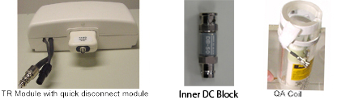
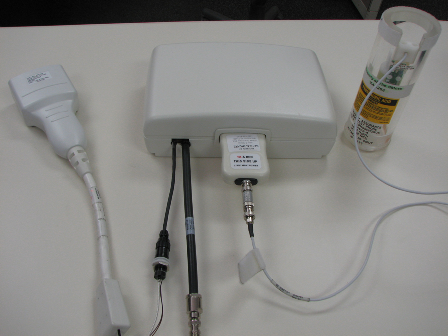
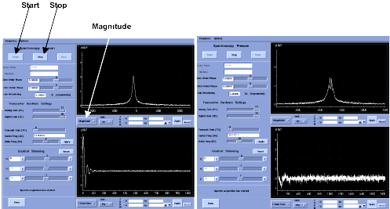
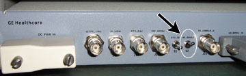

Operating Documentation
Direction 5440000, Rev# 5
Signa HDxt Service Methods
Module Version 9.0, Version Date 4/24/09
Operating Documentation |
| Required Persons | Preliminary Reqs | Procedure | Finalization |
|---|---|---|---|
| 1 | 15 mins | 45 mins | 30 mins |
The tests in this section are used to ensure the operation of the Multi Nuclear Spectroscopy (MNS) subsystem. All the tests utilize a transmit/receive (T/R) module and quality assurance (QA) probe for the nucleus under test (e.g. 13C or 31P). The tests are run in the same manner regardless of field strength or nucleus, therefore this single set of instructions covers both 13C and 31P nuclei on 3.0T systems.
Table 1: Minimum Performance Limits for the MNS Subsystem
| Nucleus | Field Strength | Min Mag at TG = 0 | Min. SNR | Max NoiseStdev |
| 13C | 3.0T | 2.0 X 10^8 | 120 | 60000 |
| 31P | 3.0T | 2.0 X 10^8 | 280 | 60000 |
Illustration 1: Required Components

The following procedures are included in this functional test:
See Functional Test for the Functional Test.
See Signal to Noise Test for the Signal to Noise Test.
See Noise Test for the Noise Test.
| Item | Qty | Effectivity | Part# | Manufacturer | |
|---|---|---|---|---|---|
| 13C 3.0T | 1 | - | 2354050-6 - T/R Module | - | |
| - | - | - | 5114403-3 - QA Probe | - | |
| 31P 3.0T | 1 | - | 2354050 - T/R Module | - | |
| - | - | - | 5114403-4 - QA Probe | - | |
| 9-hole USS and Grafidy base plate | 1 | - | 46-271410 | - | |
| Inner DC Block | 1 | - | 5309801 | - | |
| Condition | Reference | Effectivity |
|---|---|---|
MNS option installed and amplifier calibrated. | - | - |
Each time the QA coil is hooked up, the Inner DC block must be connected onto BNC connector of the QD box. | - | - |
Install the T/R module onto the top of the low profile carriage assembly (LPCA) cover.
Connect the cables to the A connector on the LPCA.
Place the Grafidy base plate on the patient bed near the top of the bed.
Place the QA probe in the center hole of the Grafidy plate and lock into place (see Illustration 2).
Illustration 2: QA Probe in the Grafidy Plate

Connect the Inner DC block between the QA probe cable and the quick disconnect () module.
Illustration 3: Inner DC Block Installed

Connect the QD module to the T/R module.
Landmark on the center of the QA probe and advance to scan.
Click the [Worklist] icon, then click the [Add Pt Record] icon.
Type MNS Setup (Last Name / First Name) and press <Enter> for Patient Name.
Type geservice and press <Enter> for Patient ID.
Type 111 and press <Enter> for Patient Weight.
Click [Show All Protocols]. From the Protocol Selector library, select Service then double click on MNS_Setup.
Add the Func Test for the nucleus under test to the Multi Protocol Basket. Click [Accept].
Landmark on the center of the QA probe, if not already completed during the Hardware Setup (see Hardware Setup).
Click [Start Exam].
Click [Save Rx].
In this sequence, click [Scan], [Research], and then [Download].
In this sequence, click [Scan], [Research], and [Display CVs].
Set the following control variables (CVs) :
flip_rf1 = 2, click <Enter>.
pw_rf1 = 40, click <Enter>.
ia_rf1 = 32767, click <Enter> (See the example screen in Illustration 4)
xmtaddSCAN = 200, click <Enter>
Click [Accept]
Click, in order, [Scan], [Research], and [Download].
Illustration 4: CV Display Example pw_rf1

Click, in order, [Scan] and [Spectro Prescan].
Slide [R1] and [R2] to the maximum positions.
Set [TG] (Transmit Gain) to 0 (zero).
Set the top display mode to [Magnitude].
Click [Start]. After a few seconds you should see a peak in the top display and a free induction decay (FID) in the bottom display as shown below.
Illustration 5: Typical Prescan Signal for 31P (left) and 13C (right) at 3.0T

13C spectrum is 4 closely spaced peaks and has been centered.
Adjust the center frequency to center the peak in the Magnitude window using [Delta Frequency DX ]. After each adjustment click [Apply].
Record the Magnitude peak height. The peak height at TG = 0 should exceed the minimum acceptable value in Table 1.
Use the ZOOM Mode functions to measure.
Illustration 6: Measuring with Zoom Mode

Install the T/R module onto the top of the LPCA cover.
Place the Grafidy base plate on the patient bed near the top of the bed.
Place the QA probe in the center hole of the Grafidy plate and lock into place.
Connect Inner DC Block to BNC connector. See Illustration 3.
Connect the QA probe cable to the quick disconnect module.
Connect the QD module to the T/R module.
Landmark on the center of the QA probe and advance to scan.
Click the [Worklist] icon, then click the [Add Pt Record] icon.
Type MNS Setup (Last Name / First Name) and click on <Enter> for Patient Name.
Type geservice then click on <Enter> for Patient ID.
Type 111 and click on<Enter> for Patient Weight.
Click [Show All Protocols]. From the Protocol Selector library choose Service. From the list select MNS_Setup.
Add the [SNR Test] for the nucleus under test to the Multi Protocol Basket. Click [Accept].
Landmark on the center of the QA probe, if not already completed during Hardware Setup.
Click [Start Exam].
Click [Save Rx].
Click, in order, [Scan], [Research], and [Download].
Click, in order, [Scan], [Research], and [Display CVs].
Set the following CVs:
flip_rf1 = 2, click <Enter>.
pw_rf1 = 40, click <Enter>.
ia_rf1 = 32767, click <Enter>.
xmtaddSCAN = 200, click <Enter>.
Click [Accept].
Click [Accept].
Click, in order, [Scan], [Research], and [Download].
Click, in order, [Scan] and [Spectro Prescan].
Slide [R1] and [R2] to the maximum position.
Set [TG](Transmit Gain) to 0 (zero).
Set the top display mode to [Magnitude].
Click [Start]. After a few seconds you should see a peak in the top display and a free induction decay (FID) in the bottom display.
Adjust the center frequency to center the peak in the Magnitude window.
Change the display mode in the top window to [Pure Absorp]. The shape of the peak changes with some of the signal dipping below zero. The distortion varies depending on the QA coil and scanner.
Use the [Zero Order Phase] control to adjust the shape of the peak until it is fully positive and symmetric (see Illustration 7). The Zero Order Phase control was used to correct the spectrum until all signals were positive and the peak shape was symmetric.
Illustration 7: Typical Uncorrected (left) and Corrected (right) “Pure Absorp” (31P Peak Shape)

Increase [TG] by units of 10 until the peak decreases and becomes slightly negative, about 180.
Decrease [TG] slowly until the peak is split half-positive and half-negative (see Illustration 8).
Illustration 8: Example of Half-Positive and Half-Negative

Record this null value for [TG].
Subtract 60 units from the null [TG] value and set [TG] to this value. Now the peak is positive again and at maximum amplitude.
Click [Stop] and then click [Done].
Click [Scan] to collect the SNR data.
Switch to the [Tools] Workspace and open a Command Window.
Type sage and click <Enter> to initiate the SAGE spectroscopy analysis tool (see Illustration 9).
Illustration 9: Example of Sage Tool

Click on, in order, [File], [Load], and [Rawdata] to open the load raw data dialog window.
When the scan is finished click [Update List] to refresh the list of P files to choose from (see Illustration 10).
Illustration 10: Example of Raw Load Window

The top-most P file is the latest. Select this file and click [Load](see Illustration 10).
In the main SAGE panel, select in order [Macros], [Func Tests], and [SNR Test…](see Illustration 11).
Move the windows around if necessary.
Illustration 11: SNR Test Window

Setup the SNR Test window as listed in Table 2 for the nucleus under test.
Table 2: SNR Test Panel Settings for 13C and 31P SNR Tests
| Field | 13C Setting | 31P Setting |
| Spectral Apodize | YES | NO |
| Function: Exponential | ||
| LB 2.5 Hz | ||
| Line Shaping NO | ||
| Zero Fill | NO | NO |
| Num pts in frame | 4096 | 4096 |
| Noise Calc Region | 500 to 1500 | 500 to 1500 |
| Zoom Spectral Dimension | 50 to –50 ppm | 50 to –50 ppm |
| Show Analysis Plots | NO | NO |
Click [Run] on the SNR Test window. The SNR is calculated for the active data set and reported in the command window where SAGE was started.
Illustration 12: Example of Data Set

Record the n=32 value for peak SNR (AmpSNR). Compare to the minimum acceptable value in Table 1
Install the TR module onto the top of the LPCA cover.
Connect the cables to the A connector on the LPCA.
Place the Grafidy base plate on the patient bed near the top of the bed.
Place the QA probe in the center hole of the Grafidy plate and lock into place.
Connect Inner DC Block between the QA probe cable and the quick disconnect module. See Illustration 3.
Connect the QD module to the TR module.
Landmark on the center of the QA probe and advance to scan.
Click the [Worklist] icon, then click the [Add Pt Record] icon.
Type MNS Setup (Last Name / First Name) and click on <Enter> for Patient Name.
Type geservice then click on <Enter> for Patient ID.
Type 111 and click on <Enter> for Patient Weight.
Click [Show All Protocols]. From the Protocol Selector library choose Service. From the list select MNS_Setup.
Add the Noise Test for the nucleus under test to the Multi Protocol Basket. Click on [Accept].
Landmark on the center of the QA probe, if not already completed during Hardware Setup.
Click [Start Exam].
Click [Save Rx].
Click, in order, [Scan], [Research], and [Download].
Click, in order, [Scan], [Research], and [Display CVs].
Set CV ia_rf1 = 0 and then click [Accept].
Click, in order, [Scan], [Research], and [Download].
Click, in order, [Scan] and [Spectro Prescan].
Slide [R1] and [R2] to the maximum position.
Set [TG] to 0 (zero).
Turn the RF ENABLE Switch on the MNS Exciter OFF by flipping it down (see Illustration 13).
Illustration 13: Location of RF Switch on MNS Exciter

Set the top display mode to [Power].
Click [Start]. After a few seconds you should see a band of noise across the power spectrum. See Illustration 14. There should be no distinct broad peaks across the spectrum. The noise intensity should taper off near the edges.
Illustration 14: Noise Test Power Spectrum in Spectro Prescan

The tops of the noise should be about even across the window without any peaks. Peaks in the power spectrum may indicate a source of noise in the scan room.
Click [Stop] and then click [Done].
Click [Scan] to collect the Noise data.
Switch to the [Tools] Workspace and open a Command Window.
Type sage then click <Enter> to initiate the SAGE spectroscopy analysis tool.
Illustration 15: Sage Window
Click on, in order, [File], [Load], and [Rawdata] to open the Raw Load data dialog window.
Illustration 16: Raw Data Load Window

When the scan is finished click [Update List] to refresh the list of P files to choose from (see Illustration 16).
The upper-most P file is the latest. Select this file and click [Load].
In the main SAGE panel, click in order [Macros], [Func Tests], and [SNR Test…].
Move the windows around if necessary.
Set up the SNR Test window as listed in Table 3 for nucleus under test.
Illustration 17: SNR Test Window

Table 3: SNR Test Panel Settings for Noise Tests
| Field | 13C Setting | 31P Setting |
| Spectral Apodize | NO | NO |
| Zero Fill | NO | NO |
| Num pts in frame | 4096 | 4096 |
| Noise Calc Region | 500 to 3500 | 500 to 3500 |
| Zoom Spectral Dimension (3T) | 480 to –480 ppm | 300 to –300 ppm |
| Show Analysis Plots | NO | NO |
Click [Run] on the SNR Test window. The noise is calculated for the active data set and reported in the command window where SAGE was started.
Record the n=32 value for Noise. Compare to the maximum acceptable.
Illustration 18: Example of Noise Data

In the spectrum window, select Chan then click on [Power].
The spectrum should be flat across the window with tapering to zero at each edge as shown in Table 1. Broad peaks in this window suggest unwanted noise in the scan room. Use this test as a tool for tracking down noise sources if found (see Illustration 19). There should be no distinct broad peaks across the spectrum. The noise intensity should taper off near the edges.
Illustration 19: Noise Test Power Spectrum Following Calculations in SAGE

To zoom out and see the full spectrum, click [Zoom], then right click in the window and select [Unzoom]. Right click again and click [Quit] to exit the zoom control.
Turn the RF ENABLE Switch on the MNS Exciter ON by flipping it upward (see Illustration 13).
Remove any hardware used during system testing.
Do a test scan of the system to ensure proper operation.